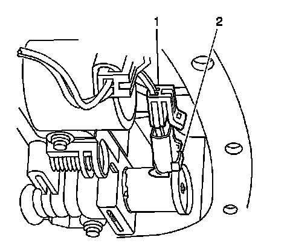
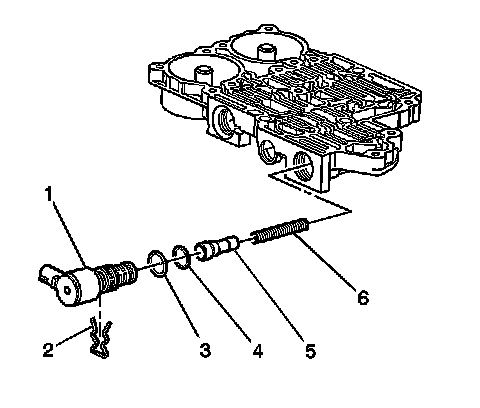

Torque Converter Clutch Solenoid: Service and Repair
Torque Converter Clutch Solenoid Replacement
Removal Procedure
1. Remove the transmission fluid pan and filter. Refer to Automatic Transmission Fluid and Filter Replacement (Removal and Replacement) .
2. Loosen, but do not remove, the control valve body to transmission case bolts. Refer to Control Valve Body Accumulator Assembly Replacement (Service and Repair) .
3. Continue to loosen the bolts until there is a gap of 6.35 mm (0.25 in) between the control valve body and the transmission case. This will allow for removal of the torque converter clutch (TCC) pulse width modulation (PWM) solenoid valve without completely removing the valve body from the transmission.

4. Disconnect the electrical wiring harness connector (1) from the TCC PWM solenoid valve (2).

5. Using a small screwdriver or pick, remove the TCC PWM solenoid valve retainer from the control valve body.

6. Remove the TCC PWM solenoid valve (1) from the control valve body.
7. Remove the O-ring seals (3-4) from the TCC PWM solenoid valve (1), ONLY if the O-rings are cut or worn.
Installation Procedure
1. Install new O-ring seals (3-4) to the TCC PWM solenoid valve (1), if the O-rings were previously removed.
2. Install the TCC PWM solenoid valve (1) into the control valve body.
3. Install the TCC PWM solenoid valve retainer into the control valve body.
4. Connect the electrical wiring harness connector (1) to the TCC PWM solenoid valve (2).
Important:
* Use the proper torque and tightening sequence when installing the valve body.
* Confirm that the manual shift shaft detent lever locating pin is properly engaged with the manual valve link.
* Confirm that the detent spring roller is properly engaged with the manual shift shaft switch.
5. Tighten the control valve body bolts. Refer to Control Valve Body Accumulator Assembly Replacement (Service and Repair) .
6. Install the transmission fluid pan and filter. Refer to Automatic Transmission Fluid and Filter Replacement (Removal and Replacement) .
Important: It is recommended that transmission adaptive pressure (TAP) information be reset.
Resetting the TAP values using a scan tool will erase all learned values in all cells. As a result, the ECM, PCM or TCM will need to relearn TAP values. Transmission performance may be affected as new TAP values are learned.
7. Reset the TAP values. Refer to Transmission Adaptive Functions (Transmission Adaptive Functions) .